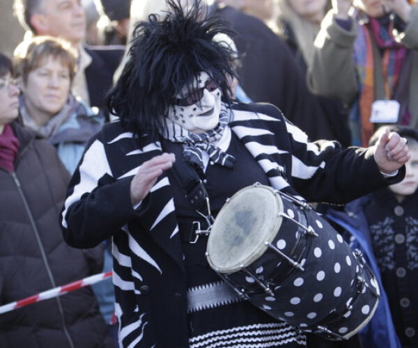
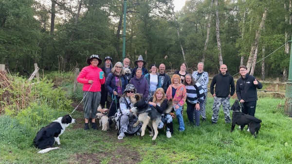
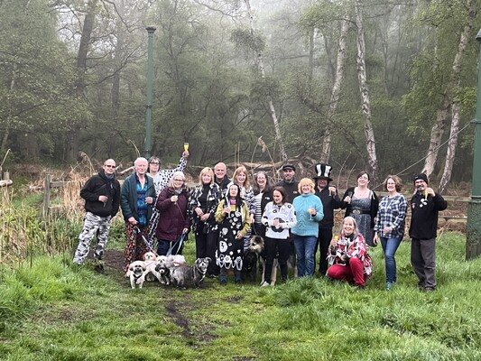

News
R.I.P Chris Kempton — the last of the original Pig Dyke band
Wed 5 Nov, 2025

We are sad to report the passing on 4th November 2025 of Christine ("Chris") Kempton, who joined as a dancer when the team (then Yaxley Morris) started in 1987. She became the team's drummer and part of the iconic Pig Dyke band that played for 15 years, and she continued playing until the Covid years.A picture and tribute from one of the team's current musicians is on this page: tribute to Chris Kempton.
May Day dancing at sunrise
Thu 1 May, 2025

Every May Day we meet at the lowest point of the Fens to dance as the sun rises. We have no particular reason other than we did it last year, and the year before, for so many years few can remember why we did it the first time.Very early, at the lowest spot in England....
Wed 1 May, 2024

Another great May Morning....